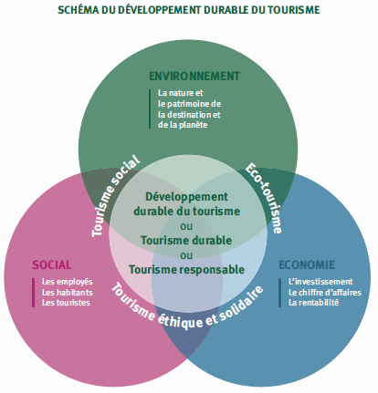
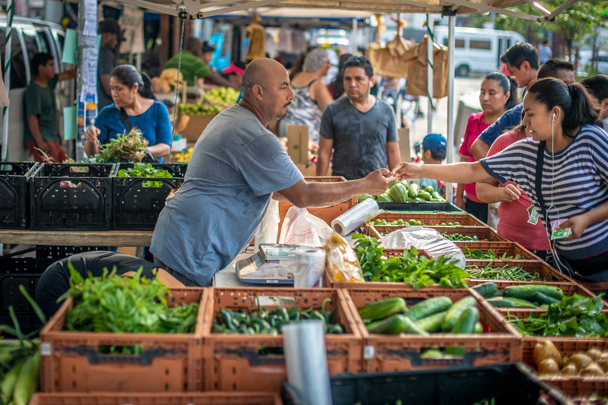

Le guide du touriste responsable
Êtes-vous prêt à révolutionner vos voyages et en faire des expériences significatives et durables? Selon l'Organisation mondiale du tourisme, le tourisme responsable en est un qui « tient pleinement compte de ses impacts économiques, sociaux et environnementaux actuels et futurs ». Dans le monde ultra connecté où nous vivons, il est grand temps que nos voyages enrichissent non seulement nos vies, mais laissent également une empreinte positive, où que nous allions. Pour faire de cette devise une réalité, voici un condensé de gestes simples mais efficaces à adopter pour voyager de manière responsable.
Documentez-vous
Et oui, effectuer des recherches pour en savoir plus sur les coutumes, les traditions et les enjeux sociaux du pays est un excellent moyen de s'assurer de bien vous intégrer à la population locale. De cette manière, vous attiserez votre curiosité pour vos aventures à venir. Apprendre à dire quelques mots dans la langue locale vous aidera à discuter avec les locaux pour vivre une expérience plus authentique. Cela vous permettra d'exprimer votre gratitude envers les gens que vous rencontrerez.
Soyez respectueux
Chaque endroit où vous poserez vos valises sera unique. L'histoire, l'architecture, les normes sociales, la religion et les codes vestimentaires sont des éléments clés pris en compte par le touriste responsable. Laissez vos préjugés chez vous et soyez ouvert aux opportunités d'apprentissage. Ne critiquez pas les conditions de vie des locaux ou leurs pratiques. Il en va de même pour les prestataires de services de lieux touristiques et du personnel des hôtels. Après tout, ce sont eux qui font le charme de votre destination. Pensez donc à respecter leur vie privée et à éterniser ces moments seulement si on vous l'a autorisé.
Consommez local
Autant que possible, faites en sorte d'acheter de la nourriture locale des marchands ambulants, des souvenirs faits à main par des artisans locaux. En honorant leur travail, vous aurez des souvenirs uniques tout en permettant aux artisans de vivre de leur métier qui, souvent, a été transmis de génération en génération. Soutenez les entreprises locales qui promeuvent la diversité et l'égalité, et tant que possible, ayez pour habitude de laisser un pourboire aux petits commerçants.

Soyez écolo, c'est à la mode
Minimisez votre impact sur l'environnement. Commencez par vous servir des serviettes comme vous le feriez chez vous, privilégier la gourde à la bouteille en plastique et faire le tri. En effet, les déchets représentent un véritable défi pour toute destination touristique. Un simple geste permet de préserver les endroits touristiques et de contribuer à l'action climatique. Pour ce qui en est de produits dérivés de végétaux et d'animaux menacés, ne les achetez surtout pas, la nature vous en remerciera!
Références
- Hellocarbo - Tout tout tout, vous saurez (presque) tout sur le tourisme éco-responsable
- unwto.org - Tourisme de développement durable
- Lapresse.ca - Les dix bons gestes du touriste responsable
- Vieuxloupdemer.com - Les principes du tourisme durable pour voyager responsable
- Civileats - Photo de marchands et d'acheteurs
- Tourisme-durable - Image du diagramme expliquant le tourisme responsable
Écrit par

Précilla Murden
Salut, c'est Précilla ! Je suis actuellement en 4e année dans le programme de trad...
En savoir plus